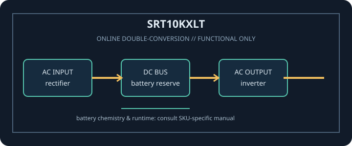

[ ONLINE DOUBLE-CONVERSION UPS // IDENTIFIED MODEL ]
Smart-UPS On-Line SRT10KXLT
APC / Schneider Electric SRT10KXLT: 10000 VA / 10000 W online double-conversion UPS. This record covers only the identified SKU and regional configuration; match complete model code and nameplate to manufacturer documentation.

ARCHIVAL IDENTIFICATION: Record full SKU, region, serial/date code, firmware/revision, installed options, battery identifier and observed condition. Similar product names do not prove electrical compatibility.
Model specifications
| Exact model / topology | APC / Schneider Electric SRT10KXLT; Online double-conversion UPS for 208 V single-phase service. |
|---|---|
| Rated output | 10000 VA / 10000 W. VA and W limits are separate constraints; never exceed either. |
| Input / output voltage | Input: 208 V nominal; hardwired input. Output: 208 V nominal output; confirm exact site wiring and configuration before connection. |
| Input connection | Hardwired input connection (no plug/receptacle); requires a correctly rated 208 V circuit. |
| Output receptacles | 4 × NEMA L6-20R and 2 × NEMA L6-30R output receptacles. |
| Battery chemistry / service | Internal sealed lead-acid battery system; supports compatible SRT external battery packs for additional runtime. Match the complete SKU and approved battery service instructions. |
| Runtime | The manufacturer SRT8K/SRT10K guide and runtime documentation give load- and pack-dependent values. Actual runtime is affected by battery condition/age, charge, temperature and connected watts. |
| Transfer behavior | Online double-conversion keeps the inverter as the normal load source; no utility-to-inverter transfer interval in normal operation. Bypass and protection transitions have defined operating limits in the manual. |
| Communications / compatibility | USB/serial communications and SmartSlot for compatible optional network management accessories; confirm management card and shutdown software support. |
| Compatibility / safety | 208 V, 10 kVA/10 kW system with hardwired input and L6-20R/L6-30R outputs. Dedicated rated wiring, grounding and overcurrent protection are essential; have installation and service performed by qualified personnel. Read the exact revision of the manufacturer manual before connection, service or battery replacement. |
Service and compatibility notes
- Measure and record connected watts and source voltage; runtime is not guaranteed for an aged or untested battery.
- Do not open energized mains equipment. Never defeat protective earth, overload an outlet, use damaged equipment, or substitute an unapproved battery.
- For hardwired or high-current versions, qualified installation, rated branch protection and local electrical code apply.
- Confirm the complete model suffix, input wiring, output voltage, outlet map and manual revision against the unit nameplate before connecting equipment.
Manufacturer datasheet and manual sources
- APC Smart-UPS On-Line SRT10KXLT manufacturer specificationOfficial Schneider Electric SKU page for power, 208 V connections, outlets and options.
- APC SRT8K/SRT10K tower/rack installation guideOfficial manufacturer guide covering installation, wiring and safety.